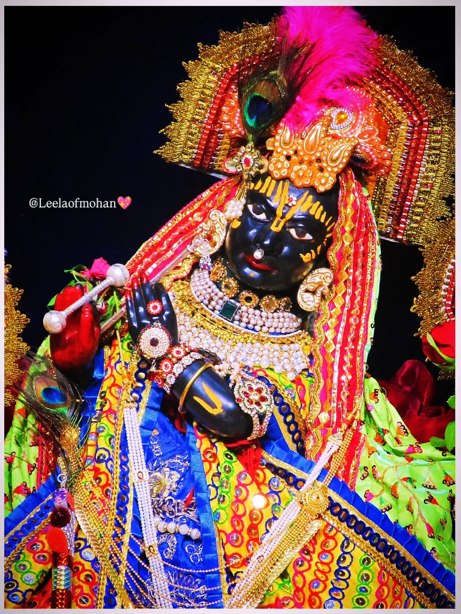

Temple History
This temple is located in the Jjansi city. It is a grand palace like building where lord Krishna is worshiped. It is estimated have been built in 1780. This temple was built by Sakku Bai, mother in law of Rani Laxmi Baiof Jhansi.Sakku Bai was the mother of Rani Laxmi Bai of Jhansi.It is said that Temple was the main center of faith of the royal family.Rani Laxmi Bai is used to come with mother-in-law to worship in this temple.Even today people come from far and wide to see this temple.This temple is also maintained by traditional Marathi family.
Spiritual Importance
Every prayer, ritual, and bhajan at the temple is designed to elevate consciousness and inspire harmony, gratitude, and inner peace.
Vision
To be a center of devotion and service that welcomes every soul seeking peace, wisdom, and compassion.
Mission
To preserve sacred heritage, support the needy, and spread spiritual values through regular worship and outreach.
Temple Timings
The temple opens early in the morning for aarti and remains open till 12:00 PM.Then Patt opens in evening 5:00 PM for aarti, Bhajan and shayan aarti.
Daily Schedule
09:00 AM – Morning Aarti
Morning blessings and devotional opening.
12:00 PM – Patt Close
Temple doors close after Aarti.
05:00 PM – Patt Open
Temple doors open for Darshan.
07:00 PM – Sandhya Aarti
Evening devotional celebration.
07:30 PM to 09:30 PM – Bhajan
Evening devotional celebration.
09:30 PM – Shayan Aarti
Night prayer and closing of the temple.
